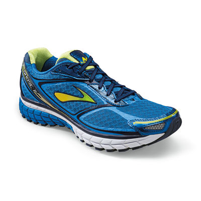

The Ghost 7 is a triple threat of balance, cushion, and lightweight materials. Hitting the sweet spot for millions of runners, this neutral running shoe for men gives you the stuff to kick back for miles on end, or lean in and pick up the pace. We’ve maintained the horseshoe-shaped crash pad, full ground contact, and omega grooves in the forefoot for the super-smooth heel-to-toe transition runners love. We’ve improved the multi-award-winning Ghost by making it smoother and lighter. BioMoGo DNA in the midsole offers adaptive cushioning while staying more flexible. Bigger lugs in the forefoot make the Ghost feel more responsive as you run. And the look? More modern while remaining technical, thanks to the Ghost’s signature color-shift chevron and no-sew overlays. The Ghost may scare off the competition, but it’s plenty friendly to your feet.

ref =http://www.brooksrunning.com/en_ca/brooks-ghost-7-mens-running-shoes/110168.html